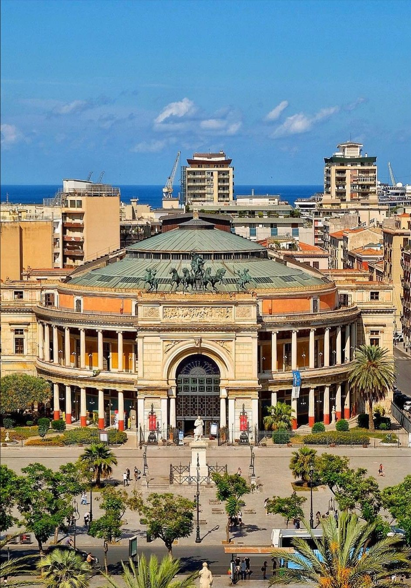
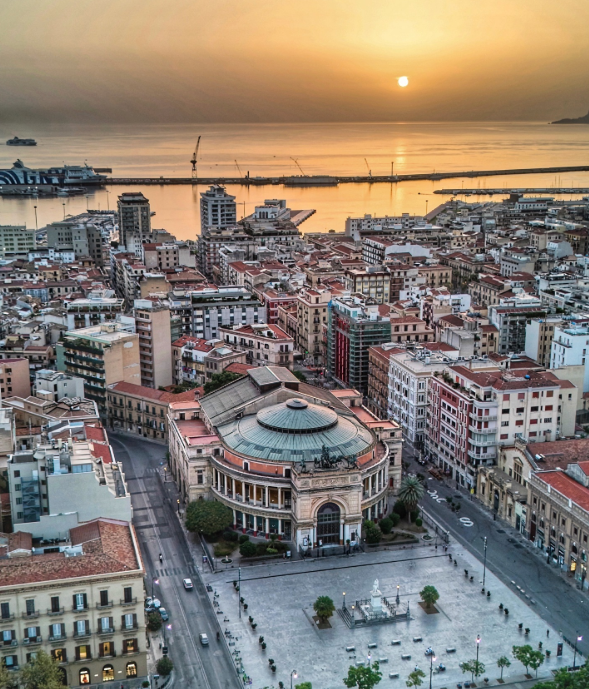

Piazza Castelnuovo
 ATMOSFERA: Il momento magico è il pomeriggio tardo. La luce del sole colpisce frontalmente la quadriga bronzea in cima al teatro, facendola brillare contro il cielo azzurro, mentre le lunghe ombre dei platani di Via Libertà iniziano a rinfrescare la piazza.
ATMOSFERA: Il momento magico è il pomeriggio tardo. La luce del sole colpisce frontalmente la quadriga bronzea in cima al teatro, facendola brillare contro il cielo azzurro, mentre le lunghe ombre dei platani di Via Libertà iniziano a rinfrescare la piazza.
 STORIA/ARTE: Il Teatro Politeama è stato costruito come un "Tempio della Musica". Osserva bene le colonne: seguono rigorosamente gli ordini classici (dorico e ionico), proprio come i templi greci, ma reinterpretati con il gusto monumentale dell'Ottocento.
STORIA/ARTE: Il Teatro Politeama è stato costruito come un "Tempio della Musica". Osserva bene le colonne: seguono rigorosamente gli ordini classici (dorico e ionico), proprio come i templi greci, ma reinterpretati con il gusto monumentale dell'Ottocento.
 CURIOSITÀ/SPETTACOLO: Sapevi che il Politeama ospitava anche spettacoli circensi? Al suo interno, prima di diventare un tempio della lirica, si tenevano gare di equitazione e acrobazie. La piazza stessa è la "maschera" della Palermo nobile di un tempo.
CURIOSITÀ/SPETTACOLO: Sapevi che il Politeama ospitava anche spettacoli circensi? Al suo interno, prima di diventare un tempio della lirica, si tenevano gare di equitazione e acrobazie. La piazza stessa è la "maschera" della Palermo nobile di un tempo.

Il Cuore Pulsante della Palermo Moderna
Piazza Politeama non è semplicemente uno spazio urbano; è l’emblema della Palermo "Capitale" del XIX secolo. Progettata per essere il nuovo baricentro della città che si espandeva oltre le antiche mura cinquecentesche, questa piazza rappresenta l’incontro perfetto tra l’eredità classica e l’ambizione della borghesia industriale dell'epoca, guidata da famiglie come i Florio.
Il Teatro Politeama Garibaldi: Un Tempio delle Arti
Il cuore pulsante di questa pagina è l'imponente struttura del Teatro, opera dell'architetto Giuseppe Damiani Almeyda. Ispirato ai modelli del classicismo romano e pompeiano, il teatro rompe gli schemi tradizionali: La Forma Circolare: A differenza dei teatri a ferro di cavallo, il Politeama nasce come un enorme anfiteatro. Questa scelta non fu solo estetica, ma funzionale: doveva accogliere "molte arti" (Polis-theama), dalle opere liriche ai circhi equestri, dalle feste popolari alle esibizioni ginniche. L'Arco di Trionfo: L'ingresso è concepito come un monumentale arco celebrativo, che accoglie il visitatore con un senso di grandiosità. La Quadriga di Bronzo: Svettante sopra l'ingresso, l'opera di Mario Rutelli raffigura Apollo, dio della musica e della luce, su un carro trainato da quattro cavalli che sembrano pronti a lanciarsi verso il mare. È il simbolo del dinamismo di una città che, a fine '800, era tra le più moderne d'Europa. Le decorazioni esterne richiamano le policromie dei templi antichi. I fregi, le colonne ioniche e doriche e i dettagli in metallo (all'avanguardia per l'epoca) creano un contrasto cromatico unico con il cielo azzurro della Sicilia. Passeggiare lungo il perimetro del teatro significa leggere un libro di storia dell'arte a cielo aperto, dove ogni dettaglio è pensato per stupire e celebrare la bellezza.
Vite, Caffè e Tradizioni all'ombra della Quadriga
Piazza Politeama è in realtà un sistema binario composto da Piazza Castelnuovo e Piazza Ruggero Settimo, un immenso "tappeto di pietra" dove si respira l'essenza stessa della socialità siciliana. Sul lato di Piazza Castelnuovo sorge una delle gemme più delicate della piazza: il Palchetto della Musica. Questa struttura circolare in pietra bianca, decorata con motivi floreali tipici dello stile Liberty, era il luogo dove le bande cittadine suonavano per il popolo durante le domeniche di festa. Oggi è un punto di ritrovo iconico, un luogo dove il tempo sembra essersi fermato mentre intorno la città corre frenetica.
Il Salotto di Via Libertà
La piazza funge da "porta di ingresso" alla prestigiosa Via Libertà, il viale dei platani e delle grandi firme. È qui che è nato il concetto di "passìu" (la passeggiata) palermitano: vestirsi bene, incontrarsi tra le palme e le statue monumentali (come quella dedicata a Ruggero Settimo) e discutere di politica, sport e vita quotidiana. I caffè storici che circondano la piazza sono stati, e sono tuttora, uffici informali per intellettuali, artisti e commercianti
Leggende Urbane
Il Teatro "Senza Tetto": Pochi sanno che per molti anni il Politeama non ebbe una copertura rigida. Gli spettatori assistevano agli spettacoli sotto le stelle o protetti da grandi teloni, rendendo l'esperienza ancora più simile alle antiche agorà greche. Le Statue Parlanti: Ogni monumento della piazza racconta un pezzo di Unità d'Italia e di orgoglio siciliano, creando una galleria di eroi che osservano silenziosi il flusso continuo di turisti e cittadini.
